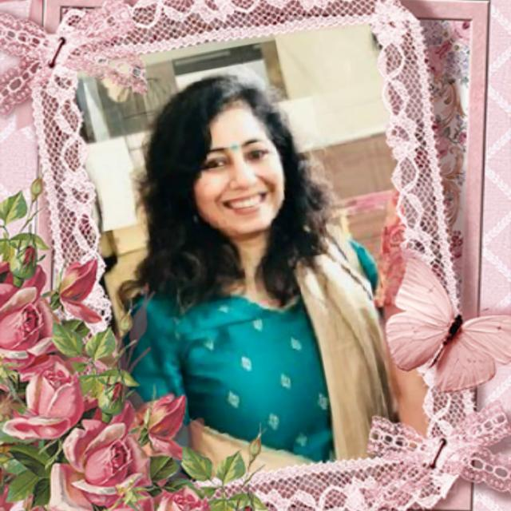
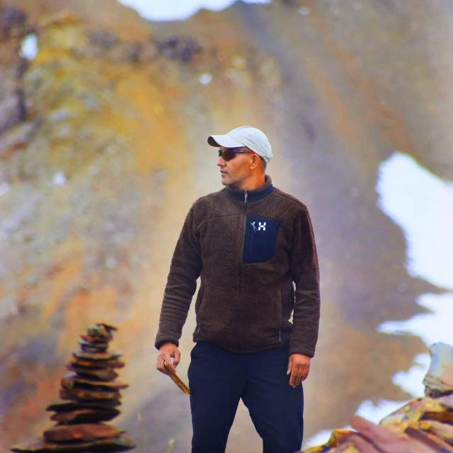
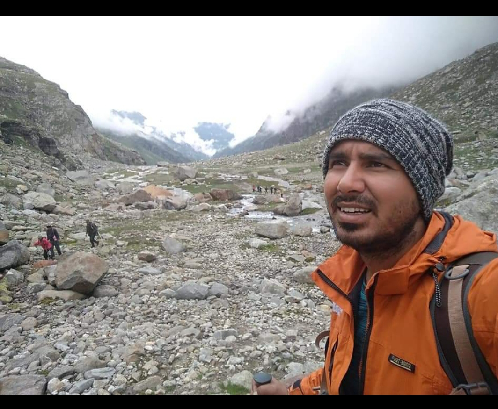

Our Team
We are a team of individuals working together to create a memorable
Outdoor Experience for you. We are qualified professional outdoor
instructors, who have worked for some of India’s premier Outdoor
organizations.

Sonu Mehrotra
Educator at The shishukunj International
Sonu Mehrotra is an educator and a nature lover. She has an
experience of teaching science to Middle School for the past 15
years in one of the most reputed schools in M.P. At the same time,
she is passionate about adventure and adventure sports. Her love for
nature has made her travel to many places in India like Kashmir, Leh
ladakh, Himachal Pradesh, Arunachal Pradesh, Sikkim, Cherrapunji
etc. to name a few. She also has an experience of organising and
conducting activity based adventure camps for different age groups
at various places in Himacahal Pradesh She has personally
experienced High altitude treks of varying expertise level.

Tara Khatri
Professional Mountaineer
Born & brought up in Manali, Himachal Pradesh, it is natural that
Tara would be enthralled by the mountains. The mighty Himalayas seem
to have beckoned Tara and after graduating from college, he enrolled
himself at Mountaineering Institute. He ended up with not just one
but three professional certificates. Later on, he went on to
enroll himself in the National Outdoor Leadership School(NOLS)
India, Where he did Trip Leader course and earned a certificate in
Wilderness First Response (WFR) , which makes him adept in taking
critical medical and evacuation decisions in trying situations.

Leelakar Thakur
Professional Mountaineer
A highly skilled and enthusiastic mountain biker and a paraglider
Leelakar Thakur( lovingly known as LK) has done his certificate
course from AVIMAS Manali as well as Paragliding Association of
India(Manali) and Red cross Societ(Delhi).
He delves into experiential learning where in he takes the participants
into wilderness and teaches them survival skills. Participants enjoy
his company ,appreciate his knowledge of the wild and admire his
adventure skills. He also has the experience of scaling some eminent
peaks of Himalayas like Shetidhar, Hanuman Tibba, CB13 and 14. In
his free time he plays volleyball, does rafting and goes for solo
treks.